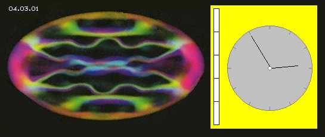
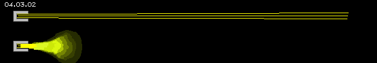
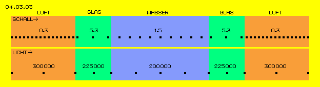
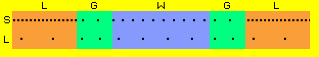
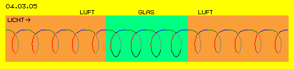
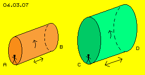
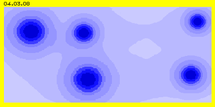
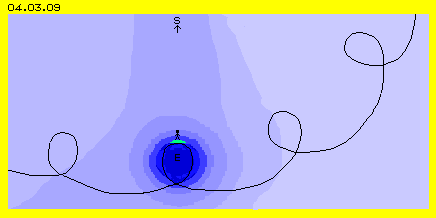

| Alfred Evert | 01.09.2006 |
04.03. Lichtäther
Real oder Abstrakt

Dieses Plasma besteht aus einem Stoff und ein ´Stück´ dieses Stoffes befindet sich direkt neben einem anderen gleichartigen Stück. Unterschiedlich an diversen Positionen sind nur die jeweils aktuellen Bewegungen, die aber vollkommen fließend ineinander übergehen. Weil Äther lückenlos ist, darf man nicht von ´Äther-Teilchen´ reden. Auch obiges ´Stück´ dieses Stoffs (oder eine ´Portion´ davon) ist real nicht abgrenzbar. Ich verwende darum den geometrischen Begriff ´Ätherpunkt´, wenn eine Stelle im Äther in seiner Bewegung beobachtet werden soll. Dieser Stoff hat natürlich eine Ausdehnung (Stück an Stück bzw. unmittelbar ´Punkt an Punkt´), nicht nur hier diese Plasma-Blase umfassend, sondern ohne Unterteilung das ganze Universum weit.
Bewegung kann nicht durch Verschieben von Teilen an Grenzflächen gegeneinander geschehen, sondern nur indem ein Punkt um einen anderen drehend ist und alle Nachbarpunkte sich analog verhalten. Wie dieses Bild augenscheinlich macht, kann nur ein Schwingen und Winden statt finden, von Ort zu Ort mit wechselnder Intensität bzw. auf unterschiedlich gekrümmten Wegen. Im Zentrum eines Bewegungsmusters sind generell die Bewegungen relativ weiträumig und reduzieren sich nach außen hin zu Schwingen auf engeren Bahnen.
In diesem Bild ist noch einmal eine Uhr eingezeichnet und im Vergleich mit deren Bewegung lässt sich z.B. die Frequenz des Schwingens feststellen. Eingezeichnet ist auch ein Maßstab und man erkennt deutlich, dass analog zur ´Zeit´ auch ´Ausdehnung´ bzw. Raum nur über den Vergleich mit einem Meterstab messbar wird. Diese abstrakte ´Welt von Raum und Zeit´ (hier gelb markiert) sind von Menschen erfundene, beliebige, fiktive Vergleichsmaßstäbe, während real existent ausschließlich die ´Welt des Äther-Plasmas und seiner Bewegungen´ ist.
Es mag manchem Leser lästig und witzlos erscheinen, wenn ich diese Unterscheidung in real und abstrakt wiederholt betone. Wenn man aber das allen Erscheinungen zugrunde liegende Wesen erkennen will, darf man eben nicht mit unpräzisen Sammelbegriffen darüber hinweg diskutieren (wie praktisch in allen Disziplinen vorrangiger Usus), sondern muss die Eigenschaften der realen Basis aller Erscheinungen präzise beschreiben - weil nur so die erkennbaren ´Naturgesetze´ logisch erklärbar werden.
Äther und Licht
Von vielen Lesern wurde ich natürlich darauf hingewiesen, dass man früher einen Äther als Medium der Lichtausbreitung unterstellte, was aber durch Experimente von Michelson und anderer nicht bestätigt werden konnte. Darum gilt heute dieser ´Lichtäther´ als nicht existent.
Auch für alle anderen elektromagnetische Erscheinungen wurde kein Medium als notwendig erkannt. Vielmehr scheint die Vorstellung von ´Feldern´ ausreichend, weil man deren Eigenschaften und Wirkungen kennt und hinreichend zutreffende Berechnungen möglich sind. Nur weiß man noch immer nicht, warum und wie physikalische Felder die jeweiligen Ergebnisse liefern. Es ist absolut richtig: Lichtäther gibt es nicht - weil dieses Medium keinesfalls nur Licht transportiert, sondern reale Basis aller Erscheinungen ist.
Neben obiger Differenzierung der fiktiven Welt von Vergleichsmaßstäben und der realen Welt des Äther-Plasmas muss noch einmal unterschieden werden in primäre Ätherbewegungen und die sekundäre ´Welt der daraus resultierenden Erscheinungen´. Dieser Unterschied wird deutlich im Vergleich von Schall und Licht.
Plasma- und Teilchen-Bewegung

Das Licht dagegen wird offensichtlich durch die Luft nur geringfügig behindert und kommt 100.000 mal schneller voran - weil es eine Bewegung unmittelbar im Äther darstellt. Man könnte natürlich die Anschauung vertreten, dass Licht (Quanten, Photonen, als Teilchen oder Welle) durch das Nichts fliegt (wie nach gängiger Lehre) und darum so schnell ist - wenn nicht seltsame Phänomene gegeben wären.
Beschleunigung nach Verzögerung

Im nachfolgenden Wasser sind Moleküle sehr viel lockerer, so dass Schall-Impulse wieder auf etwa 1.5 km/sec verzögert werden. Erstaunlicherweise würde die Ausbreitungsgeschwindigkeit in der nächsten Glaswand wieder beschleunigt. Möglicherweise könnten Teile der Schall-Energie nachfolgend auch wieder durch die Luft weiter ´schleichen´.
Die Vorwärtsbewegung des Lichts verhält sich umgekehrt: sie ist in Luft (oder Vakuum im Sinne von Luft-Leere) maximal rd. 300 000 km/sec und wird im Glas reduziert auf etwa 3/4 sowie im Wasser auf etwa 2/3. Unbestreitbar beschleunigt nun das Licht seine Geschwindigkeit, wenn es anschließend wieder durch Glas und in Luft sich weiter bewegen wird.
Dieses ´Phänomen selbsttätiger Wieder-Beschleunigung´ widerspricht allen Regeln gängiger Physik, egal wie man argumentiert, egal ob als Welle oder Photon-Teilchen mit oder ohne Masse betrachtet. Es bleibt Geheimnis aller Physiker, wie ein durch Widerstand in seiner Ausbreitung reduzierter Impuls anschließend von sich aus wieder erhöhte Fahrt aufnehmen sollte.

Bekanntlich wird unterstellt, dass Licht sich im Vakuum ausbreitet, also keines Mediums bedarf. Die Verzögerung von Licht in dichterer Masse wäre insofern einigermaßen verständlich, wenn das Glas-Gitter als Hindernis betrachtet wird. Nach gängigem Verständnis ist aber niemals diese autonome Wieder-Beschleunigung möglich. Woher soll die für jede Beschleunigung unabdingbar notwendige, zusätzliche Energie kommen?
Schall ist Bewegung von Teilchen, je nach Dichte der Teilchen pflanzt sich der Impuls mehr oder weniger schnell fort. Licht aber ist angeblich an kein Medium gebunden, so dass relative Dichte oder Leere materieller Teilchen hierauf keinen Einfluss haben kann. Als Umkehrschluss ergäbe sich die Frage, warum sich Licht im ´reinen Vakuum des Alls´ nur mit begrenzter Geschwindigkeit ausbreitet, anstatt selbst-beschleunigend auf unendliche Geschwindigkeit zu kommen.
Licht-Medium
Das prinzipielle Missverständnis ist noch immer, dass irgendwelche harte Materie (wie die Erde oder auch nur Elektronen oder Photonen-Teilchen) wie Geschosse durch den Äther fliegen würden. Obiges Zero-Point-Plasma zeigt eindeutig auf, dass es nirgendwo ´harte´ Materie gibt. Die dort ´eingefrorenen´ Atome bilden Plasma-Blasen, die Millimeter weit sich ausdehnen können - und es ist nichts erkennbar außer Bewegungen (in diesem Fall jedoch zum großen Teil die Bewegungsmuster des ´Gefängnisses´). Es gibt nicht hier Äther und dort Materie, vielmehr ist alles nur aus Äther-Substanz und deren Bewegungsmuster.
Alles sind nur Wirbel im Äther. Nur Wirbelstrukturen bewegen sich durch den Äther. Die Vorwärtsbewegung von Wirbeln erfordert aber, dass aller umgebende Äther entsprechend sich mit bewegt (nach außen hin in verringertem Umfang). Diese Umgruppierung vor und neben und hinter dem Wirbel kann nicht augenblicklich erfolgen. Es wird nichts mal eben schnell vorwärts oder zur Seite gestoßen, vielmehr werden bei gleichbleibender Geschwindigkeit nur Bewegungswege ausgeweitet (und wieder enger, nachdem der Wirbel vorüber gezogen ist). Daher gibt es keine unendlich schnelle Geschwindigkeit, kann auch ein Licht-Wirbel-Komplex nur mit beschränkter Geschwindigkeit durch das Universum fliegen. Darüber hinaus kann überhaupt nichts geradeaus vorwärts fliegen. Licht kann sich beispielsweise nur schraubenförmig vorwärts winden.
Licht-Schleifen-Bahnen

Durch eine Lichtquelle wird nun diesem Schwingen ein Impuls aufgeprägt, der sich aber nicht geradeaus vorwärts bewegen kann, sondern dieses Schwingen mit ausführen muss, d.h. nur auf schraubenförmigem Weg vorwärts kommt (was wiederum stark vereinfacht ist, weil dieses Schwingen keinesfalls nur zwei-dimensional statt findet).
In Luft bzw. Vakuum kommt der Impuls relativ schnell voran, im Glas dagegen muss diese Bewegung ´längere Umwege´ mit gehen. In beiden Fällen legt der Impuls in gleichen Zeitabschnitten gleich lange Wege zurück, nur eben auf mehr oder weniger nach vorn gerichteten Streckenabschnitten (fünf enge Schleifen in der Luft und nur vier weite Schleifen in Glas).
In dieser Animation sind drei Licht-Impulse dargestellt bzw. deren zurück gelegte Strecke je Zeiteinheit werden angezeigt. Diese Bahnabschnitte sind unterschiedlich gekrümmt, haben theoretisch aber jeweils gleiche Länge. In Luft bzw. Vakuum (rot) springt der Impuls schnell voran, kommt aber im Glas (grün) in den weiten Schleifen nur langsamer voran. Beim erneuten Übergang vom Glas zur Luft findet keine absolute Beschleunigung statt, vielmehr kommt der Licht-Impuls auf den nun engeren Schleifen wieder schneller vorwärts. Am besten ist das zu erkennen, wenn man einen Impuls von links nach rechts verfolgt.
Ein Licht-Impuls ´reitet´ auf den Schwingungen des Äthers vorwärts und kommt schnell voran auf engen Bahnen des Freien Äthers und kommt nur langsamer voran, wenn er die Umwege der weiten Bahnen Gebundenen Äthers mit gehen muss.
Manchmal darf man sich nicht scheuen einfache Beispiele zu wählen, auch wenn sie grob verallgemeinert sind. Dieses Bild 04.03.07 soll kreisende Bewegung um eine Längsachse veranschaulichen, nun jedoch kombiniert mit einer Bewegung in der Längsrichtung (so wie Äther stets zugleich in alle drei Dimensionen schwingend ist).

Zusätzlich jedoch bewegen sich diese Rohre vor und zurück (siehe Doppelpfeile) in Längsrichtung, das größere Rohr bewegt sich auch in dieser Richtung auf längerem Wege. Das rechte Männchen in seiner ´groben Äther-Umgebung´ wird sehr viel länger Umwege im Raum ausführen und an seinem Ziel später eintreffen als das linke Männchen in seiner ´sauberen Ätherumgebung´ - obwohl die absolute Geschwindigkeit der Dreh- und Längs- und Schritt-Bewegungen immer gleich ist, lediglich die Wegstrecken unterschiedlich lang sind.
Diese Darstellungen sind also stark vereinfacht und können erst in späteren Kapiteln präzisiert werden. Dennoch kann damit schon deutlich aufgezeigt werden, dass obiges Phänomen autonomer Wieder-Beschleunigung logisch nur erklärbar ist, wenn ein Medium für die Fortpflanzung des Lichts unterstellt wird mit vorgenannten prinzipiellen Eigenschaften.
Limits und Trägheit
Äther ruht nirgendwo, um z.B. zu warten bis eine Lichtquelle einen Impuls aussendet. Die Lichtquelle selbst ist ein schwingender Wirbel, vor ihr ist aller Äther in Schwingungen. Es kann also niemals ein Impuls ´geradeaus-linear-vorwärts´ erzeugt, sondern immer nur aufgeprägt werden auf bereits existierende Ätherschwingung. Jedes Aufprägen oder generell jede Bewegungsänderung kann nicht lokal nur einen Punkt betreffen, sondern zugleich ist das ganze Ätherumfeld involviert - woraus sich ´Geschwindigkeits-Limits´ ergeben. Umgekehrt ergibt sich aus dieser ´Trägheit´ aber auch, dass z.B. ein einmal aufgeprägter Impuls ohne Verlust weiter laufen wird (d.h. wirkliche Energie-Konstanz besteht, garantiert allerdings nur in diesem lückenlosen Äther-Plasma).
Sauber und fein oder unsauber und grob
So schmerzhaft es für viele sein wird: es gibt nur Bewegungen und es ist nur ein einziges Medium notwendig, aus dessen unterschiedlichen Bewegungsmustern die vielfältigen Erscheinungen resultieren. Aller Äther ist universumweit in Bewegung in Form einer Grundschwingung. Alle lokal begrenzten Erscheinungen sind Wirbelkomplexe. Aber wiederum darf man nicht unterstellen, dass es einerseits den Freien Äther gibt und darin eingebettet einzelne Wirbelsysteme Gebundenen Äthers. Weil alles mit allem substanziell zusammenhängt, haben Wirbelkomplexe prinzipiell keine feste Außengrenze (obwohl uns manche davon als ´undurchdringlich harte Materie´ erscheinen).

Nach gängiger Lehre existieren vielfältige Felder mit unterschiedlichsten Kräften und Wirkungen. Tatsächlich sind das reale Bewegungen des Äthers in und ebenso zwischen den Wirbelsystemen. Hier sind diese Übergänge von Bewegungsintensitäten markiert, die beispielsweise die Erscheinung von Clustern in Flüssigkeiten oder Gitterstrukturen in Kristallen ergeben.
Dieses bedeutet, dass es z.B. zwischen Atomen keinen Freien Äther mit seiner reinen Bewegungsform geben kann, sondern nur ´verschmutzten´ Äther. Auch um Ansammlungen von Atomen herum, beispielsweise um die ganze Erde herum, ist Äther noch in relativ ´grober´ Bewegung. Gravitation, Erdmagnetismus, vielfältig reflektierte Strahlungen ergeben unendlich viele Überlagerungen von Schwingungen. Nur weit draußen im Universum wird es Freien Äther in reiner Bewegungsform geben.
Je nach ´Verschmutzungsgrad´ hat ein Lichtimpuls unterschiedlich lange Umwege zu gehen. An der Erdoberfläche kann also niemals die absolute Lichtgeschwindigkeit gemessen werden und alle Messungen zeigen auch unterschiedliche Werte je nach Ort und Zeit. Nur weit draußen in ´sauberer´ Umgebung wird Licht seine äther-bedingte maximale Geschwindigkeit erreichen.
Die Bewegungsmuster zwischen den Wirbelsystemen dieses Bildes sind natürlich jeweils in einer bevorzugten Richtung ´deformiert´. Ein Lichtstrahl wird darin nicht geradewegs voran kommen, sondern wird selbstverständlich gebeugt. Eine solche, einseitige Deformation in der Nähe von Himmelskörpern wird Gravitation genannt - und selbstverständlich wird damit auch der Weg des Lichts gebeugt.
Licht bewegt sich also keinesfalls mit konstanter Geschwindigkeit vorwärts, sondern je nach durcheiltem Bewegungsmuster bzw. ´Verschmutzungsgrad´. Licht bewegt sich keinesfalls linear vorwärts, sondern prinzipiell nur auf schraubenförmig gewundener Bahn, meist sogar höchst ungleichförmigen Bahnabschnitten, und selbstverständlich bewirkt jede asymmetrische Ätherbewegung eine entsprechende Bahnänderung. Keinesfalls aber kann irgendetwas, auch kein Licht, ohne ein in sich bewegendes Medium in Erscheinung treten.
Äther-Nachweis

Tatsächlich findet diese Bewegung auch im - nahezu - ruhenden Äther statt. Aber alle Atome dieses Lands und dieses Männchens und aller Umgebung, der dortigen materiellen Erscheinungen wie auch des dortigen Äthers, allen diesen vielfältigen Wirbelsystemen plus ´verschmutztem´ Äther dazwischen sind gleichermaßen diese beiden Drehungen aufgeprägt (und auch noch die Wanderung des Sonnensystems durch die Galaxis).
Alle dortigen Ätherwirbel und sonstige Ätherbewegungen sind parallel zueinander in gleicher Weise deformiert, weisen gemeinsam diese überlagerten Drehimpulse auf. Selbstverständlich kann man dort Lichtimpulse längs und quer und hin und her schicken - und wird keine Differenz feststellen, weil das Licht natürlich den generellen ´Umwegen´ folgen muss. In gleichartig ´verschmutztem´ Äther bzw. gleichsinnig deformierter Ätherbewegung wird die Lichtgeschwindigkeit gleich sein - aber genauso wird es Differenzen geben in Bereichen unterschiedlicher Verschmutzung, z.B. schon einige Kilometern höher, siehe oben genannte GPS-Problematik.
In ´sauberem´ Äther wird das Licht schneller sein, worauf Weltraum-Sonden hinweisen, die auf die Reise außerhalb unseres Sonnensystems geschickt wurden. Sie scheinen durch irgendwelche ´Winde´ verzögert - oder aber ihre Signale könnten von dort außen relativ schneller ankommen. Umgekehrt hat das Licht weit entfernter Objekte schon so viele ´verschmutzte´ Bereich durcheilt und wurde darin so verzögert, dass Impulse verspätet hier eintreffen, d.h. ´Rotverschiebung´ auftritt. Man kann generell keine konstante Geschwindigkeit und geradlinige Fortpflanzung des Lichts unterstellen - und darf schon gar nicht von den Verhältnissen hier auf der Erde in ´unendliche Weiten´ hinaus extrapolieren.
Jeder Lichtimpuls deformiert kurzfristig und nur zeitweilig den von ihm durchwanderten Äther - außer wenn ein lokales Ätherwirbelsysteme sich nicht deformieren lässt, d.h. undurchdringlich ist und damit sichtbar wird. Auf analoge Weise deformieren alle Atome obiger Umgebung (Land, Mensch, Luft und sonstigem ´Schmutz´ dazwischen) den ´im Raum ruhenden Äther´ vorübergehend. So wie Licht als ein simples, aber ´nicht greifbares´ Wirbelchen durch den Äther eilt - so pflanzen sich alle komplexe Wirbelkomplexe im Äther fort auf ihrer Wanderung durch das Universum.
Wir alle sind ´ungreifbar´ weil nur schwingende Wirbel im Äther. Es mag schwer fallen - aber ´unbegreiflich´ ist diese Vorstellung der Vorgänge im Äther-Plasma nicht, eher selbstverständlich, nach obigem Bild von Bewegungen einer Plasma-Blase.
Noch einmal möchte ich den Unterschied zwischen realer Welt und ´fiktiven Vergleichs-Welten´ heraus stellen. Bild 04.03.01 zeigt wieder das Plasma aus vorigen Zero-Point-Experimenten. Man sieht offensichtlich ein Etwas, das in sich ´wabbelt´, wobei keine internen Grenzen erkennbar sind. Erzeugt und begrenzt wird das Schwingungs-Gebilde durch Magnetfelder und Laserlicht, mittels dessen auch unmittelbar dieses Photo zu gewinnen ist. Die Laserstrahlen treffen an verschiedenen Stellen auf unterschiedliche Bewegungen, werden in unterschiedlicher Weise reflektiert, woraus dieses farbige Bild erzeugt wird.
Äther ist durchsichtig bzw. unsichtbar, zumindest der Freie Äther, hier z.B. markiert durch die ´Nicht-Farbe´ Schwarz, und wir können seine Bewegungen nicht sehen. Bestimmte Bewegungsmuster jedoch werden als ´Licht´ bezeichnet (z.B. obige Laserstrahlung), welches von lokalen Bewegungsmustern ausgesandt wird (zur ´Entladung von Stress´). Und es gibt jede Menge lokaler Bewegungsmuster, welche Strahlung reflektieren in unterschiedlicher Weise (alles was wir als Farben sehen können plus die für unsere Sinne unsichtbaren Frequenzen).
In Bild 04.03.02 stellt Schwarz eine ruhige stockdunkle Nacht dar. Ein Auto sendet zugleich (aus gleicher Energiequelle) einen Lichtstrahl und ein Tonsignal aus. Das Licht wird in vielen Kilometern noch zu sehen sein und wird an Partikeln der Luft nur geringfügig abgelenkt oder absorbiert. Die Energie des Schalls jedoch ´verpufft´ früher oder später, d.h. geht in Form von Wärme verloren.
Bild 04.03.03 stellt die bekannte ´Bierglas - Problematik´ dar. Schall bzw. Licht werden durch Luft in Richtung eines Glases gesandt, durchdringen das Glas, durchlaufen das darin befindliche Wasser, dann wieder die Glaswand und bewegen sich anschließend erneut durch Luft vorwärts. Die Geschwindigkeit von Schall und Licht im jeweiligen Medium sind per km/sec grob angegeben. Die schwarzen Punkte repräsentieren schematisch einzelne Impulse, die jeweiligen Abstände zwischen den Punkten entsprechen ihren Laufwegen je Zeiteinheit (wobei die Relation von Schall zu Licht nicht maßstäblich ist). In dieser Darstellung bleibt auch die Streuung des Schalls unbeachtet.
Dieses Phänomen ist nur zu erklären, wenn unterstellt wird, dass auch Licht sich nur in einem Medium fortpflanzen kann, nicht wie Schall auf Teilchen-Ebene, sondern innerhalb des (Licht-) Äthers selbst. Aufgrund der enormen Geschwindigkeit des Lichts wurde unterstellt, dass (analog zum Schall) dieses Licht-Medium ungeheure Dichte besitzen müsse. Es war dann aber vollkommen unverständlich, wie sich massive Materie durch massiven Licht-Äther hindurch bewegen können sollte.
In Bild 04.03.05 ist sehr schematisch der Weg von Licht-Impulsen dargestellt durch Luft (bzw. auch ´Vakuum´), d.h. (relativ) freien Äther. Dieser bewegt sich schwingend auf relativ engen Bahnen, hier stark vereinfacht als kleine Schleifen dargestellt. Gebundener Äther wie beispielsweise die Atome des Glases bewegt sich auf relativ weiten Bogen, hier schematisch dargestellt als größere Schleifen.
Diese Gleichheit absoluter Geschwindigkeiten in Universeller Ätherbewegung wie in lokalen Bewegungsmustern der ´Potentialwirbelwolken´ habe ich bereits in früheren Teilen beschrieben. Als Grund-Geschwindigkeit nannte ich dort ´Licht-Geschwindigkeit oder schneller´. Nachdem die Signal-Geschwindigkeit des Lichts diese maximal etwa 300.000 km/sec sind, müsste die Grundgeschwindigkeit der Ätherbewegungen wohl deutlich höher liegen (zumal alles Schwingen immer ´Umwege´ in allen drei Richtungen erfordert).
Man muss aufgrund dieser Überlegungen (und der vieler anderer Wissenschaftler und Autoren) unterstellen, dass Äther real existent ist und Licht sich nur in diesem Medium fortpflanzen kann. Darüber hinaus muss man sich von der Vorstellung lösen, es gäbe hier den Äther und dort Materie, praktisch als zwei unterschiedliche Substanzen. Es konnte noch niemals ein ´harter Kern´ materieller Art entdeckt werden. In Teilchenbeschleunigern wie in Zero-Point-Experimenten konnten letztlich nur Bilder von Bewegungen registriert werden.
Der (misslungene) Nachweis eines Licht-Äthers durch Michelson und Nachfolger ist vom Ansatz her völlig ungeeignet, weil er auf typischem ´Geschoss-Denken´ basiert: die materielle Erde fliegt durch den ruhenden Äther, also muss uns ´auf Bergeshöh´ der Äther um die Ohren pfeifen´.
Äther-Physik und -Philosophie